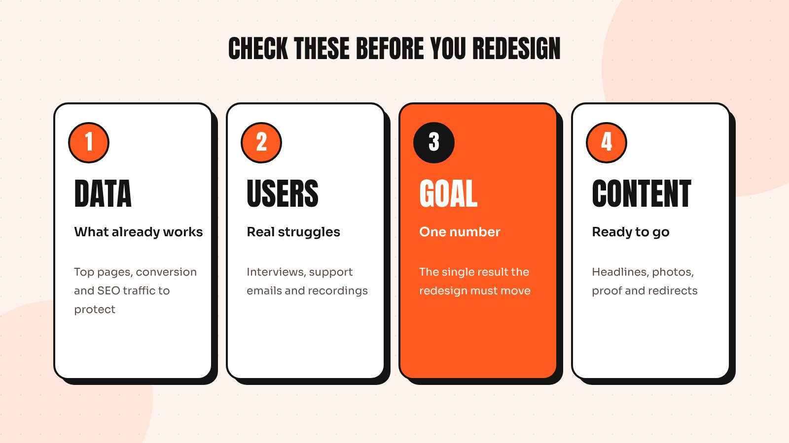

Check These 4 Things Before You Redesign Your Website or App
A redesign can double your results or quietly break what was working. Before you change a single pixel, check these four things.

Redesigns are exciting. New look, new energy, a fresh start. They’re also risky. I’ve seen redesigns lift conversion overnight and I’ve seen beautiful new sites lose a third of their sales because something important got lost along the way.
The difference is almost never talent. It’s preparation. Before I start any redesign, I check four things with the client. They take a few days at most and they protect months of work.

1. What does your data say is working?
Every existing website or app has parts that work well, even if the rest feels dated. Before you replace anything, find out what those parts are. Open your analytics and look at:
- Your top landing pages and where that traffic comes from
- Conversion rate by page and by device
- Where people drop out of key flows such as sign-up or checkout
- Which pages bring in organic search traffic
That last point matters more than most people expect. If a page ranks well on Google, changing its URL or cutting its content can wipe out traffic you spent years building. Make a list of pages to protect before the redesign starts.
2. What do your users actually struggle with?
Your team’s opinion of the current design is useful, but it isn’t the same as your users’ experience. Teams look at the product every day; customers see it for a few minutes. Talk to five customers, read your last 50 support emails and watch a handful of session recordings. Write down every point of confusion you notice.
Often the list surprises people. The thing everyone wanted to redesign turns out to be fine, while a small form or a confusing label is costing real money. A redesign that fixes the real problems will always beat one that only fixes the look.
3. What is the one goal of this redesign?
“Make it look modern” isn’t a goal; it’s a wish. Before starting, agree on the one result that matters most. More demo bookings, a higher add-to-cart rate, fewer support tickets or better retention after the first week.
Write it down with a number if you can. A clear goal settles design debates quickly and gives you a way to measure whether the redesign worked. It also stops scope creep, because every new idea has to earn its place by supporting that goal.
4. Is your content ready?
This is the check most teams skip and it causes the most delays. Design and content go hand in hand. If the new homepage needs a sharper headline, new product photos or customer stories, someone has to create them. If that work starts after the design is finished, the launch slips by weeks.
- List every page and decide: keep, rewrite, merge or remove
- Gather real testimonials, results and photos early
- Rewrite key headlines around the customer, not the company
- Plan redirects for any URL that will change

Redesign or refresh?
Once you’ve done these four checks, you may find you don’t need a full redesign at all. If the structure works and the problems are specific, a series of targeted fixes is faster, cheaper and less risky. If the brand, structure and flows all hold you back at once, a full redesign makes sense.
For online stores, my guide to the signs your Shopify store needs a redesign goes deeper. For any product, a UX audit is the natural next step, because it turns these four checks into a prioritised list of fixes.
Send me your screens and I’ll show you where users drop off and what to fix first.
Quick answers
What should I do before redesigning my website?
Review your analytics to find what already works, talk to real users about what they struggle with, agree on one measurable goal and get your content ready. These four checks protect your existing traffic and give the redesign a clear direction.
Will a website redesign hurt my SEO?
It can if URLs change without redirects or ranking content is removed. List the pages that bring organic traffic before you start, keep or improve their content and set up 301 redirects for any URL that changes.
How do I know if I need a redesign or just improvements?
If the structure works and the problems are specific, targeted improvements are usually faster and safer. A full redesign makes sense when the brand, layout and key flows all hold the business back at the same time.